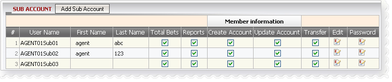
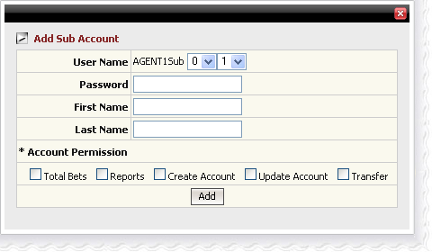

Sub Account
Definition:
Sub account is used to log into agent system with limited privileges, basically sub accounts can have access to:
- Total bets
- Reports
- Create account
- Update account
- Transfer
But these privileges will only be set by main account. Moreover, main account can also edit sub account’s first name, last name, and password or even close the sub account.

Sub Account
Note:
- To block sub account from accessing some functions, uncheck at that function's checkbox and vice versa.
- To close the account, click the icon under "Edit" column.
- To change the password, click the icon under "Password" column.
- Only 10 sub accounts can be created.
How to create Sub account?
Step 1: Click "Add Sub Account" button
Step 2: Select a number from dropdown list for sub account username.
Format: [Main account] [Sub][1][2] , example: AgentSub01
Step 3: Input password (note: Password must be at least 6 characters including at least 2 numbers and 2 digits).
Step 4: Check at each function (Total Bets, Reports, Create Account, Update Account and Transfer) to grant the privilege for sub account.
Step 5: Click "Add" button to finish adding a new sub account.

Add Sub Account